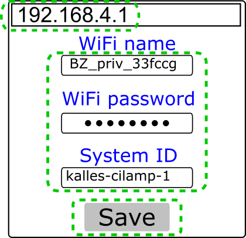
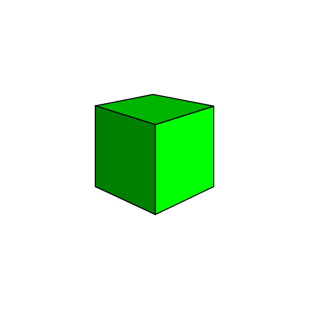

BI-Beacon documentation¶
BI-Beacon Overview¶

This is the official documentation for Business Intelligence Beacon. The primary focus of this documentation is the API to control Beacons, however it also includes information on how to configure devices, and some code examples for how to control Beacons from several different languages.
Tip
Read more about the ideas behind BI-beacon on the concept page:
Want to get one for your company? Visit the web shop, available here:
In a nutshell: BI-Beacons use a RESTful API.
There is only one end-point: /<channelkey>.
This endpoint serves as the controlling mechanism for channel with ID channelkey.
Here is an example of a complete endpoint:
https://api.cilamp.se/v1/our-beautiful-monitor
Note
channel key used to be called systemid, so if you see the old name somewhere - please give us a shout and we’ll fix it! Or even better, fork the docs repo, fix the mistake and make a pull request! :)
Repo found on GitHub here Documentation repository.
Multiple beacons can be configured to copy the state of the same channel - this is intentional and means you can deploy several Beacons that indicate the same thing.
This functionality may, for instance, be used if you have multiple offices, or if you want a Beacon both in the conference room and at the coffee machine.
First time setup¶
Configure via WiFi¶
You can setup a BI-Beacon using a mobile or desktop device that connects to the Beacons own setup web page.
| Instructions | |
|---|---|
 |
|
 |
|
|  |
|
|  |
|
{kind=link}
{kind=link}
Hint
If you have any issues, please refer to troubleshooting.
Configure via USB cable¶
You can also setup a BI-Beacon using a USB data cable.
(This, however, requires that your user is on a Linux
machine and has the proper permissions (often this
means being part of the dialout user group.)
Clone the cli repo (see Repositories).
Then, in a terminal of your choice,
$ python config_via_usb.py <ssid> <password> <channelkey> [stateserver] [port]
Reset configuration¶
If you want to go back to default settings, for example if you forgot the channel key you specified previously, hold down the FLASH button at least seven seconds. The Beacon will show a yellow light during this process, and green when the settings have been reset.
Note
The reset via FLASH is only available in firmware 0.87 and higher.
To reconfigure a Beacon with firmware 0.86 or lower, reboot it whilst it cannot connect to the router.
E.g by doing any of the following:
- Change SSID or password on the router
- Turn off the router temporarily
- Move the BI-Beacon far away from the router
When you plug it in again, the Beacon will try to connect and fail. It will then go into setup mode again.
Code examples¶
Java¶
package se.bibeacon.examples.java;
import java.io.InputStream;
import java.io.OutputStream;
import java.net.URL;
import java.net.URLConnection;
public class SetBeacon {
public static boolean setColor( String systemid, String color ) {
try {
URLConnection connection = new URL("https://api.cilamp.se/v1/" + systemid).openConnection();
connection.setDoOutput(true);
connection.setRequestProperty("Content-Type", "application/x-www-form-urlencoded");
OutputStream output = connection.getOutputStream();
output.write(("color=" + color).getBytes());
connection.getInputStream();
} catch( Exception e ) {
return false;
}
return true;
}
// Usage: <systemid> <color>
public static void main(String[] args) {
setColor(args[0], args[1]);
}
}
JavaScript¶
/*
Usage
=====
const BIBeacon = require('bi-beacon');
const beacon1 = new BIBeacon('beacon1');
const beacon2 = new BIBeacon('beacon2');
beacon1.color('#F0F0F0');
beacon2.pulse('#0F0F0F', 1000);
*/
const https = require('https');
const querystring = require('querystring');
class Beacon {
constructor(systemid, {
beaconHost = 'api.cilamp.se',
apiVersion = 1,
} = {}) {
this._systemid = systemid;
this._beaconHost = beaconHost;
this._apiVersion = apiVersion;
}
color(color) {
return this._post({ color });
}
pulse(color, period) {
return this._post({ color, period });
}
async _post(data) {
const path = `/v${ this._apiVersion }/${ this._systemid }/`;
const postData = querystring.stringify(data);
return new Promise((resovle, reject) => {
let responseData = '';
const request = https.request(
{
method: 'post',
port: 443,
host: this._beaconHost,
path,
headers: {
'Content-type': 'application/x-www-form-urlencoded',
},
},
response => {
response.on('data', chunk => {
responseData += chunk;
});
// The whole response has been received
response.on('end', () => {
try {
const out = JSON.parse(responseData);
if (response.statusCode === 200) {
resovle(out);
} else {
reject(out);
}
} catch (error) {
reject(error);
}
});
},
);
request.on('error', error => {
reject(error);
});
request.write(postData);
request.end();
});
}
}
module.exports = Beacon;
{
"name": "bi-beacon",
"version": "1.0.0",
"main": "index.js",
"author": "Gustav Ahlberg <Gustav.Ahlberg@gmail.com>",
"license": "ISC"
}
PHP¶
<?php
function bibeacon_set($channelid, $color, $period, $server="https://api.cilamp.se/v1/") {
$options = array(
'http' => array(
'header' => "Content-type: application/x-www-form-urlencoded\r\n",
'method' => 'POST',
'content' => http_build_query(
array("color"=>$color,
"period"=>$period))
)
);
$context = stream_context_create($options);
$result = @file_get_contents($server.$channelid, false, $context);
if ( $result !== FALSE ) {
if ( ($result = @json_decode($result)) !== FALSE ) {
if ( @$result->message === "'".$channelid."' updated" ) {
return TRUE;
} else { echo "Invalid response: ".json_encode($result); }
} else { echo "Server response structure error: ".error_get_last()['message']; }
} else { echo "API Request failed: ".error_get_last()['message']; }
return FALSE;
}
if (php_sapi_name() == "cli") {
if ($argc != 4) {
echo "Usage: $argv[0] <channelid> <color> <period>\n";
exit(1);
} else {
exit((int)bibeacon_set($argv[1], $argv[2], $argv[3]));
}
}
?>
shell¶
#!/bin/sh
# Set a BI-Beacon to blue
curl -X POST -F "color=#0000FF" "https://api.cilamp.se/v1/simple-awesome-monitor"
# Pulse purple slowly
curl -X POST -F "color=#4400FF" -F "period=3000" "https://api.cilamp.se/v1/simple-awesome-monitor"
API¶
There is only one endpoint! Hurray!
And it looks something like this:
https://api.cilamp.se/v1/our-beautiful-monitor
BI-Beacons are controlled via a RESTful web API, but only indirectly via a state server. This means it is possible to control Beacons from any programming language that can make HTTPs POST requests.
You configure a Beacon to continuously copy the state of a certain channel, identified by a string called channel key. A channel key is made up of at least eight characters. Allowed characters classes are small and big english letters, digits, underscore and dash, or put in regex form:
[a-zA-Z0-9_-]{8,255}
A channel key can be 8 to 255 characters long.
Note
channel key used to be called systemid.
Several Beacons may use the same channel; they will then show the same state, which is great if you have a large office, or work at an international company.
The channel key may be viewed as the access key of the Beacon, as it is all that is needed to control a device. So make sure you only share the channel key with people and systems that should be able to control the device. Do not store it publicly (unless you want anyone to be able to change the state of your Beacon, which could be fun but probably not your most common use case!)
If you want to add some security, randomize a string of at least 20 letters and numbers and use that as channel key.
A channel can be in one of two states:
| State | Meaning |
|---|---|
| static | Connected Beacons will show a constant color |
| pulsing | Connected Beacons will pulse with given speed and color |
Static colors give the impression of the state of a system or process, e.g. on or off, ready or failed.
Pulsing colors give the impression of something happening, e.g. something is building or being processed.
The meaning of individual colors and pulses is up to your imagination.
Change state¶
| URL: |
|
|---|---|
| Method: | POST |
| Parameters: |
} |
Make sure the parameters are be transmitted as URL encoded Form Data,
i.e. the request header Content-Type should be
application/x-www-form-urlencoded.
- :beacon-server
- This is the hostname of the state server.
- :channelkey
- This string identifies the channel you want to change the state of.
Note
At the moment, there is only one official beacon state server. It is available at this URL:
https://api.cilamp.se/v1
The state server will be available as open source software in June 2019, see Announcement: Open source server in June.
Parameter examples¶
| Purpose: | Set beacon to green |
|---|---|
| Parameters: |
{
color: "#00FF00"
}
| Purpose: | Set beacon to red and pulse once per second |
|---|---|
| Parameters: |
{
color: "#FF0000"
period: 1000
}
Expected response¶
On success
| Code: | 200 |
|---|---|
| Body: |
{"message": "':channelkey' updated"}
On error
| Code: | 400 |
|---|---|
| Body: |
{"message": "<error message>"}
Sample Curl Call¶
The following will make a POST request to the BI-Beacon state server
api.cilamp.se to change the state of the channel named
testchannel to green:
curl -X POST -F "color=#00FF00" "https://api.cilamp.se/v1/testchannel"
How to contribute¶
The majority of the BI-Beacon solution is supplied as open source; see the repositories table on what is and what is not open.
Code quality¶
We use Sonar Cloud to analyse the source code for code smells, bugs, security issues and so on. Any pull requests fixing any such issue is very welcome, and a good easy way to start contributing to the repositories.
Documentation build pipeline¶
This documentation is generated by sphinx through a series of build steps.
This is the order of dependence.
Repositories¶
| What | Open source? | Comment | Link |
|---|---|---|---|
| Docs | Yes | The REST protocol to control Beacons (and everything surrounding it) | Documentation repository |
| CLI | Yes | Command line utilities | Command Line Utilities repository |
| Examples | Yes | Client code examples (many languages) | Client examples repository |
| Server | Yes | BI-Beacon state server | Server repository |
| Artifacts | Yes (read only) | Automatically generated content from the other repositories | Build Artifacts repository |
| Firmware | No | The software running on physical BI-Beacons |
Architecture¶
- BI-Beacon 1 and 2
- This is either physical or virtual BI-Beacon devices, showing some state of something interesting to your business.
- State Server
- This is the source of state for BI-Beacons.
- Caller systems
- This is the user of the Beacons - where API calls originate.
Background¶
The BI-Beacon architecture is fairly straightforward, however, might need some explanation anyway since it is not the simplest of possible designs and this is intentional.
So let’s begin with the simplest possible design and work our way from there.
Idea 1: direct cable connections¶
If we want to control devices in our offices, the simplest possible idea would be to connect them directly to our computers.
Indeed, this is possible with a BI-Beacon, using a USB data cable connected to a wall-powered PC, but since it requires USB-serial device drivers, as well as the right user/device permissions on the PC in question, this would actually be harder to do than using the REST API over WiFi!
This method also has the drawback of limiting the location of a Beacon to the vicinity of a PC. Also, the software controlling the Beacon would need to be on that PC.
Idea 2: dynamic IP addresses¶
The next natural step after direct connection to a PC would be to connect over the local network - be it over WiFi or an ethernet cable, giving the device a local IP.
So why not use this method?
Well, the reason is corporate IT networks; they’re a mess in general!
Getting a dynamic IP by connecting a device to the network is one thing; DHCP is common enough today that it can be generally relied upon, however, what then? If you want to communicate to a (local) device connected to the (local) network, you would need to know its’ dynamic IP address.
At home, you could just login to your router (at least if you are tech savvy enough!) and find the IP-address of the Beacon.
But at work, unless you’re working in the IT department, that is typically out of the question, not only for “security reasons”, but also due to that the IT department most likely already have enough on their hands! And getting them to configure a device to have a static IP is just .. many weeks of delivery time - time none of us has, nor want to put into getting a BI-Beacon up and running.
A drawback of this method is also the ‘local’ part - we cannot control a BI-Beacon unless we’re on the same network. Forget about controlling it from the cloud!
Idea 3: IoT to the rescue!¶
So, as odd as it sounds, it is actually easier to make the device an internet-global device instead of a local (direct cable, or local network) device!
The trick is to have the Beacons retrieve their respective state from a known server (corporate internal or otherwise), via secure HTTPs requests.
This means the devices can get their dynamic, local IP-addresses inside of your fine and dandy corporate network and you address them indirectly by communicating with the state server, which resides either inside your corporate network (at a well-known address) or via the public internet!
As an integrator or user of Bi-Beacons, all you have to do is send off HTTPs requests to the state server (or “API server” if you prefer) which stores the states and serves them to Beacons asking what state to switch to.
It Just Works™! :)